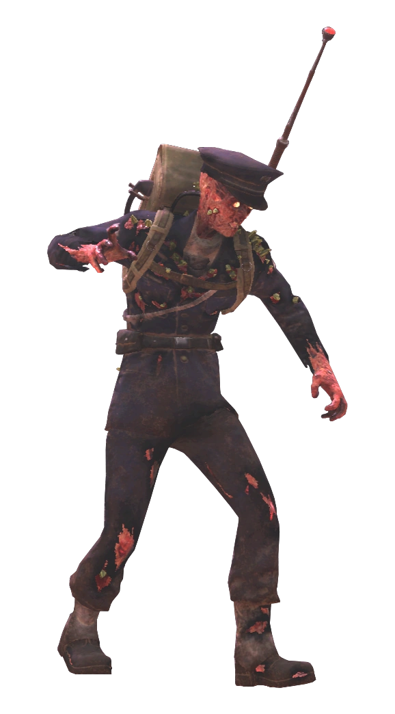
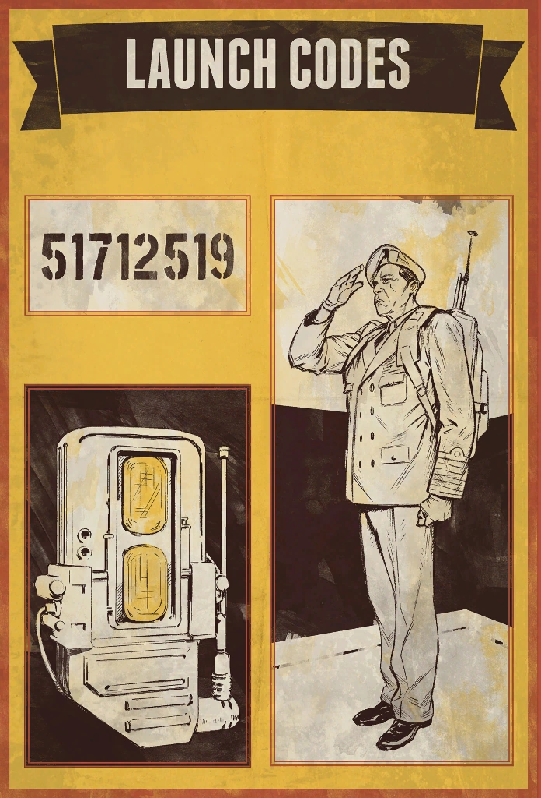

Appalachian Launch Codes
アパラチアの核発射コード
アパラチアの核発射コードは、アパラチアの3つの核サイロ（サイト・アルファ、サイト・ブラボー、サイト・チャーリー）から核兵器を発射するために必要な8桁のコードです。
各サイロのコードを完成させるには、マップ上に散らばる8つのコードの断片を集め、暗号を解読する必要があります。
コード断片の収集

コードの断片は、ラジオパックを背負い、赤いランプが点滅して高い電子音を発しているスコーチ士官またはフェラル・グール士官から入手できます。
ホワイトスプリング・バンカーのコマンドウィングにある監視ターミナルで、特定のサイロのコード断片を追跡するための放射能クエスト「監視の妨害」を開始できます。
固定の場所だけでなく、マップ上でランダムに遭遇する士官からも入手可能です。
有効期限
コードは毎週月曜日の00:00 UTC（日本時間：月曜日の午前9時）に失効し、プレイヤーのインベントリから消滅します。
有効期限が近づくと通知が表示されます。失効時にプレイヤーに実害はありません。
コードの解読方法

8つの断片が集まったら、それらを並び替え、さらに暗号を解読する必要があります。
解読にはキーワード暗号（Keyword cipher）とアナグラムの解読が必要です。
解読の手順
- Pip-Boyに表示されている順番通りに断片の英字と数字を並べる
- キーワード暗号を使用して、英字の文字列を復号する
- 復号された英字の文字列がアナグラム（綴り変え）になっているため、意味のある英単語になるように並び替える
- 英字を並び替える際、ペアになっている数字も一緒に動かす。完成した英単語に対応する数字の並びが最終的な発射コード
キーワード暗号の仕組み
キーワードは、ホワイトスプリング・バンカーのコマンドウィングにある壁面のボードに、1週間かけて徐々に表示されます（週末には完全な単語が判明します）。
キーワードをアルファベットの先頭に置き（重複は除外）、その後に残りのアルファベットを順に並べて、標準のアルファベットとの置換表を作成します。
キーワード CIRCUIT → 重複除外 → C I R U T
残りのアルファベット → A B D E F G H J K L M N O P Q S V W X Y Z
平文: A B C D E F G H I J K L M N O P Q R S T U V W X Y Z
暗号: C I R U T A B D E F G H J K L M N O P Q S V W X Y Z
ステップ2: 暗号化された文字列を復号
暗号化: C R D T Q G L P
数字: 5 6 3 0 0 3 5 9
↓ 置換表で逆変換
復号: A C H E T K O S
数字: 5 6 3 0 0 3 5 9
ステップ3: アナグラムを解く
ACHETKOS → HOTCAKES
ステップ4: 数字を英字と一緒に並び替え
H-3 O-5 T-0 C-6 A-5 K-3 E-0 S-9
最終発射コード: 35065309
備考
- 核発射には、コードの他に核キーカードが必要です（発射時に消費）
- 多くのプレイヤーが外部の自動解読サイト「NukaCrypt」を利用しています
- 以前の作品（Fort ConstantineやDivide）に登場したコードと比較して、本作のコードはセグメント化とキーワード暗号によるより複雑な暗号化が施されています
ロア的背景
藤仁屋情報基地のターミナルエントリによると、中国の工作員たちもこの暗号化方式を発見していました。
シュガー・グローヴのアーカイブから暗号化文書のコピーを入手し、コードが「キーワード暗号」で暗号化されていることを突き止めましたが、キーワードの入手方法がわからず、プロジェクトは凍結されました。
この設定は、ゲーム内で実際にプレイヤーが体験する暗号解読メカニクスと直結しており、ロアとゲームプレイの見事な融合となっています。
ギャラリー
Fallout 76で最もユニークなゲームメカニクスの一つ。
核を撃つために、暗号学の知識が必要になるとは思わなかった。
毎週変わるキーワードを見つけ、置換表を作り、アナグラムを解く——
正直、NukaCryptに頼るプレイヤーが大半ですが（私もです）、
自力で解読した時の達成感は格別。
そして何より面白いのは、藤仁屋情報基地の中国工作員が全く同じ暗号で躓いていたこと。
ゲームプレイの暗号解読が、ロアの中の工作員たちの苦闘と重なるという設計が見事です。
「キーワードの決定方法がわからない」——彼らもプレイヤーと同じ壁にぶつかっていたのです。
This article was created by translating and editing Appalachian launch codes from Nukapedia: The Fallout Wiki.
Licensed under the Creative Commons Attribution-Share Alike License (CC BY-SA 3.0).
コミュニティ維持のため、寄付を受け付けております。
> COMMENTS